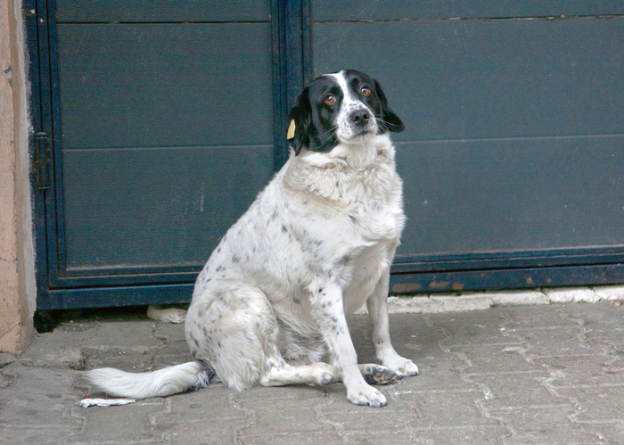
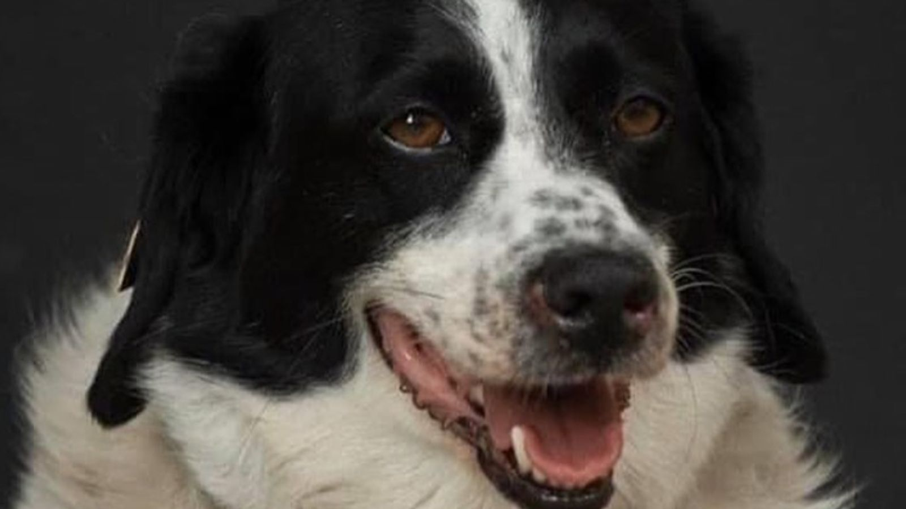
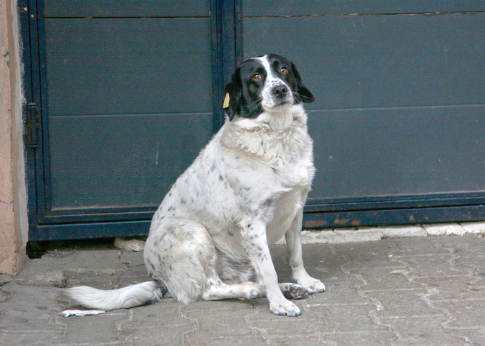
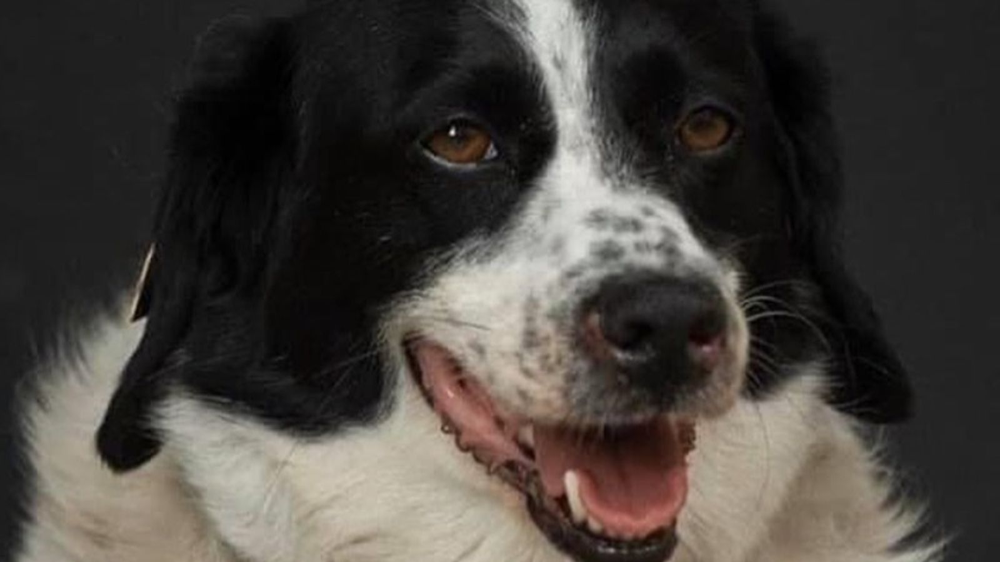

ᲐᲓᲠᲔᲡᲐᲢᲘ: კულტურისა და ძეგლთა დაცვის სამინისტრო
კუპატა, ჰაჩიკო, ლაიკა, ბალტო და სხვა ძაღლები, რომლებიც მსოფლიომ გაიცნო.
ჩვენი კუპატა მთელმა საქართველომ სოციალურ ქსელში გავრცელებული ვიდეოთი გაიცნო, რომელშიც ის ბავშვებს ზებრაზე გადასვლაში ეხმარებოდა და ავტომობილის უყურადღებო მძღოლებს უყეფდა.
ამის შემდეგ ცუგა ბათუმში შენობის კედელზე უზარმაზარი სტენსილითაც გამოსახეს. აჭარის ტურიზმისა და კურორტების დეპარტამენტის თანამშრომლებმა სახლი უყიდეს, მალევე კი ვარსკვლავიც გაუხსნეს, როგორც ხალხის რჩეულს.
ზემოთ ჩამოთვლილი ძაღლებიდან ბევრი მათგანის ძეგლი უკვე დგას მსოფლიოს სხვადასხვა ქალაქში, ჩვენი კუპატა ვისზე ნაკლები იყო?
ამიტომ მგონი ცუდი იდეა არ არის, დაიდგას ძეგლი ბათუმში, თუნდაც იმ გადასასვლელთან ან იმ უბანში სადაც ცხოვრობდა.
დაგვეხმარე საკმარისი ხელმოწერების დაგროვებაში!